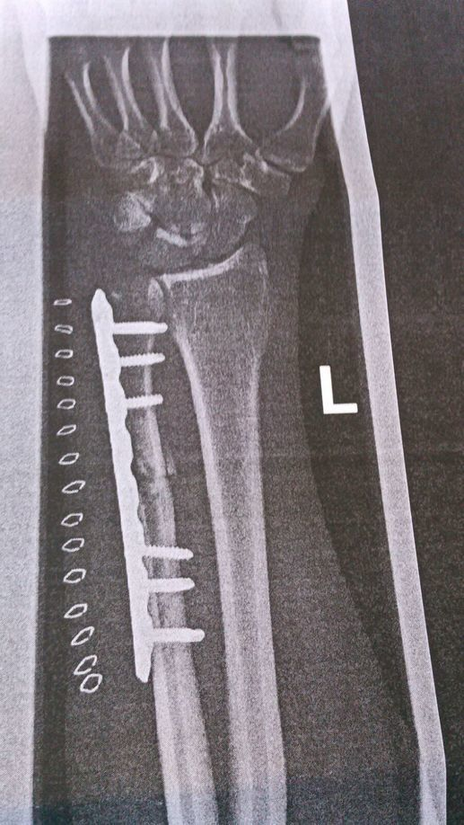

пиздец! Posted on September 16, 2016
Der Vollständigkeit halber will ich nun doch die Ereignisse an den letzten Tagen der Reise schildern.
Tag 79
An diesem verhängnisvollen Tag war zunächst alles wie gehabt. Ein bisschen Regen, ein bisschen Sonnenschein. Zunächst ging es auf kleineren Straßen und Radwegen aus Pärnu raus. Später folgte die Beschilderung für den Ostseeküstenradweg stehts der Hauptstraße. Diese war stark befahren und bot wenig Platz zum Ausweichen.
Somit ist es kein Wunder, dass es genau auf dieser Straße passierte. Ich war keine 30 Kilometer geradelt, als ich vom Außenspiegel eines vorbeifahrenden Autos am Arm getroffen wurde. Ich schaffte es noch, das Fahrrad ausrollen zu lassen und mich ins Gras neben der Fahrbahn zu setzen. Die Verursacherin war sichtlich geschockt, aber tendenziell hilfsbereit. Eine weitere hilfsbereite Autofahrerin rief umgehend einen Rettungswagen. Dieser brachte mich dann zum Krankenhaus. Mein Fahrrad und das Gepäck wurde von der Polizei mitgenommen.
Im Krankenhaus wurde mir dann mitgeteilt, dass der Arm gebrochen sei. Da wurde mir zum ersten Mal wirklich bewusst, dass die Reise hier zuende war. пиздец!Anschließend wurde ich von der Polizei im Krankenhaus abgeholt und zur Wache gefahren. Dort konnte ich, im Beisein einer Dolmetscherin, meine Aussage zu Protokoll bringen. Die Beamten waren auch so nett, mir ein Hostel für die Nacht zu organisieren und mich und mein Gepäck dort abzusetzen.
Im Hostel hatte ich ein paar nette Zimmergenossen. Ron half mir sogar dabei mein Essen zu kochen.
Tag 80
Am nächsten Tag brachte mich mein britischer europäischer Zimmergenosse Ron sogar zum Busbahnhof. Dort fanden wir schnell einen Bus, der mich und mein Fahrrad nach Tallinn bringen konnte. Als ich in Tallinn aus dem Bus ausstieg traf ich Eva wieder, die ich am Abend zuvor im Hostel kennen gelernt hatte. So konnten wir uns gemeinsam auf Hostelsuche begeben. Das Fahrrad konnte ich mit dem ganzen Gepäck gerade so mit der rechten Hand schieben. Wir mussten trotzdem alle paar Meter anhalten, da mir ständig die Brille von der Nase rutschte. Nach ein paar Fehlschlägen wurden wir schließlich fündig. Zeitgleich mit uns kam ein weiter Radfahrer an. Rainer kam aus Österreich, lebte aber schon ein paar Jahre in Deutschland und sprach gutes Deutsch.
Am Nachmittag bin ich zusammen mit Rainer noch auf einen kleinen Rundgang durch die Altstadt gegangen. Diesmal waren auch etwas weniger Touristen unterwegs. Als wir die Photos an der Stadtmauer machten, hatte Rainer seinen Rucksack etwas abseits abgestellt. Natürlich war er kurze Zeit später verschwunden. Zum Glück hatte er dort weder wichtige Dokumente noch Wertsachen drin.
Am Abend haben Eva, Rainer und Ich noch gemeinsam etwas gekocht. Wobei meine Aufgaben sich auf’s Umrühren beschränkten.
Tag 81
Am nächsten Morgen brachte mich Eva noch zum Hafen. Trotz der tatkräftigen Unterstützung verpasste ich die Fähre leider knapp. пиздец! Zum Glück gab es zeitnah eine weitere Fähre nach Helsinki. Als ich endlich auf der Fähre war wurde mir bewusst, dass ich es wohl am Abend in Helsinki nicht rechtzeitig zu meiner Anschlussfähre nach Travemünde schaffen würde. Nach einigen Telefonaten mit der Hotline des Betreibers konnte ich meine Buchung auf den nächsten Tag verschieben.
Nun brauchte ich jedoch eine Bleibe für die Nacht. Zum Glück wurde ich schnell auf Warmshowers fündig. Mein Gastgeber Lauri holte mich sogar von der Metro ab. Bei ihm zuhause angekommen, konnte ich seine Familie kennen lernen. Nachdem Lauri die Kinder ins Bett gebracht hatte, erzählten wir uns noch von vergangenen Reisen. Lauri besaß eine große Sammlung verschiedenster Karten, sodass wir uns immer genau zeigen konnten, wo wir gewesen waren.
Tag 82
Am nächsten Morgen fuhr ich mit Lauri zunächst zum Supermarkt. Dort konnte ich mich nochmal gut mit Lakritz und anderen finnischen Köstlichkeiten eindecken. Nach dem Mittagessen führ mich Lauris Vater mit seinem alten Mercedes zum Fährterminal.
Beim warten auf die Fähre traf ich Kerstin und Janosch. Beiden waren unabhängig von einander mit dem Rad in Finnland unterwegs gewesen. Beim Wetter hatten die Beiden jedoch wenig Glück gehabt, sodass Beide froh waren wieder nach Hause zu können.
Janosch wusste direkt einen guten Raum, wo wir unser Lager aufschlugen. Als wir am Abend in den Raum kamen, mussten wir jedoch feststellen, dass der Raum von stark alkoholisierten Schnarchern in Beschlag genommen wurde. Also schliefen wir einfach im Bordrestaurant. Dort traffen wir ein Ehepaar aus Bayern, die aus dem selben Grund hier untergekommen waren. Es schien die ganze Nacht das Licht und gegen halb 7 wurde man von der Putzfrau geweckt.
Tag 83
Am nächsten Tag vagabuntierten wir weiter über das Schiff. Immer auf der Suche nach einem Ort wo man von der Besatzung in Ruhe gelassen wurde und auch mitgebrachte Speisen verzehren konnte. Am späten Abend legten wir dann endlich in Travemünde an. Dort wurde ich direkt von einem Bediensteten empfangen, der mich und mein Fahrrad zum Terminal brachte, wo ich bereits von meiner Familie erwartet wurde. Es folgte eine längere Autofahrt und um 4 Uhr waren wir dann endlich wieder Zuhause.
Nachtrag
Am darauffolgenden Montag wurde ich in Solingen operiert. Ich habe jetzt eine Schiene im Unterarm, kann dafür aber ohne Gips rumlaufen. Nach 2 Tagen durfte ich das Krankenhaus auch schon wieder verlassen. Inzwischen kann ich fast alles wieder machen mit dem Arm. Nur belasten darf ich ihn nicht. Also muss ich noch etwas warten, bis ich wieder aufs Rad steigen darf. 
TO BE CONTINUED…